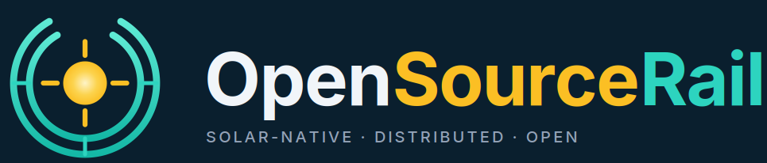

Build the railway. Keep the knowledge.
OpenSourceRail is an open reference platform for designing, testing, building and operating light metro and urban metro systems.
It is aimed at public owners, domestic engineering firms and qualified suppliers in capital-constrained, high-insolation markets. The public portfolio contains 265 developing-world city models across 43 country programmes. Generated values are planning sensitivities, not bids or funding commitments.

A connected system of systems, with narrow authority boundaries.
Commodity hardware
Linux SBCs, deterministic Ethernet and standard radio layers keep value in transferable software and integration.
Catenary-free energy
The reference uses onboard LFP batteries with station and depot PV; site energy and charging remain deployment studies.
Machine-checkable safety
GSN-style claims link formal models, property tests and code while independent assessors retain approval authority.
One deployment pipeline
- Choose a city record and country assumptions.
- Generate a deterministic city digital twin.
- Review network, service, cost, energy and fleet outputs.
- Export civil alignment, CAD, IFC and quantities.
- Build pilot hardware through a COTS/SBC or custom-board track.
- Close survey, supplier, workshop, bench and assessor evidence.